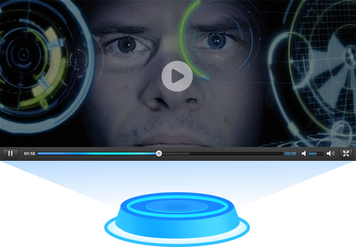

首页
人脸检测
人脸搜索
人脸对比
流的处理
返回主站
产品概述
人脸识别（Face Recognition）基于源中瑞领先的面部分析技术，提供包括人脸检测与分析、五官定位、人脸搜索、人脸比对、人脸验证、活体检测等多种功能，为开发者和企业提供高性能高可用的人脸识别服务。可应用于智慧零售、智慧楼宇等多种应用场景，充分满足各行业客户的人脸属性识别及客户身份确认等需求。
人脸检测
检测图中的人脸，并为人脸标记出边框。检测出人脸后，可对人脸进行分析，获得眼、口、鼻轮廓等72个关键点定位准确识别多种人脸属性，如性别，年龄，表情等信息。该技术可适应大角度侧脸，遮挡，模糊，表情变化等各种实际环境。
人脸搜索
人脸检索指的是将输入的人脸与数据库中的人脸进行比对，确定输入的人脸是否属于特定角色的身份验证的一种技术，在人脸闸机、会员刷脸识别等领域进行产品应用。
人脸检测
人脸比对最开始的应用应该是古代的通缉令了，通常通缉令都会附上罪犯的头像 和特征，让老百姓一起进行人脸比对。在刑侦技术中，通过犯罪嫌疑人的照片和一些证据图像进行对比，有助于快速确定犯罪嫌疑人的身份，推进案件侦破进展。

“流”的处理
1.摄像头对人脸的捕捉，然后进行分析。
2.视频流，对于网络中的一些视频，直播视频以及远程摄像头都可以进行人脸捕捉然后进行分析。